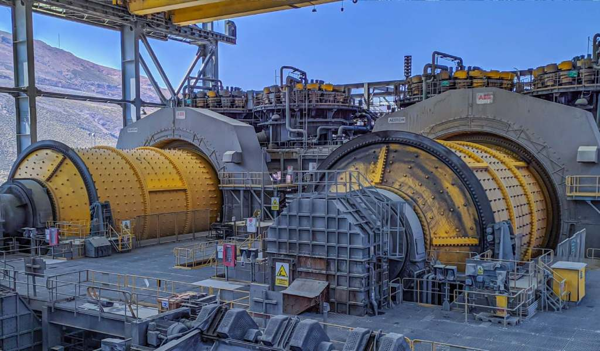
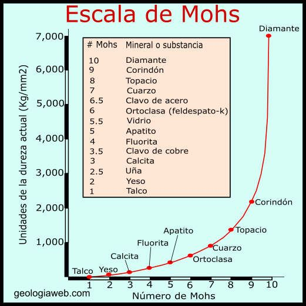

Reducción de tamaño
Conminución, mecanismos de fractura y leyes energéticas. Una de las operaciones más comunes en la industria y, paradójicamente, una de las menos eficientes.
Esta lectura acompaña la sesión sobre reducción de tamaño, también llamada conminución, y sintetiza los principios, mecanismos, equipos y leyes energéticas que gobiernan el paso de trozos grandes de sólido a partículas controladas. Es una de las operaciones mecánicas más comunes en la industria y, paradójicamente, una de las menos eficientes energéticamente.
En esta lectura
- ¿Por qué rompemos las cosas?
- Mecanismos de fractura
- Equipos de reducción de tamaño
- Eficiencia energética y leyes de la conminución
- Ejemplo resuelto: energía de molienda con Bond
- Análisis de tamaño de partícula
- Factores operativos y criterios de selección
- Consejos prácticos para el proyecto
- Bibliografía

Si su proyecto involucra la reducción de tamaño de un material, deberás investigar sus propiedades y seleccionar un tipo de equipo adecuado. Además, tendrás que justificar la elección del equipo y, si es posible, estimar la energía requerida utilizando alguna de las leyes de conminución. Bond es la más recomendada para estimaciones preliminares siempre que se pueda obtener o asumir un $W_i$.
1. ¿Por qué rompemos las cosas?
La reducción de tamaño, o conminución, es una operación unitaria que transforma materiales sólidos en partículas más pequeñas. Sus objetivos principales son:
Aumentar el área superficial: esencial para acelerar reacciones químicas heterogéneas (sólido-fluido), mejorar procesos de disolución, lixiviación o la eficiencia de catalizadores sólidos.
Obtener un tamaño de partícula específico: muchos productos finales o intermedios requieren un tamaño definido para cumplir con especificaciones de calidad, de mercado o de la siguiente etapa del proceso (cemento, pigmentos, harinas, productos farmacéuticos).
Liberar componentes valiosos: en minería se muele la roca para liberar los minerales de interés de la ganga (material estéril).
Facilitar el manejo y transporte: partículas más pequeñas y uniformes son más fáciles de transportar neumáticamente o de mezclar.
Mejorar propiedades del producto: como la textura en alimentos o la capacidad de compactación en la industria farmacéutica.
Para una partícula esférica, el área específica por unidad de volumen escala como $a_v \propto 1/D$. Reducir de 50 mm a 100 µm, un factor de 500 en diámetro, multiplica el área superficial disponible por ~500 veces. Esta es la razón profunda por la cual la molienda es irreemplazable en hidrometalurgia, en catálisis heterogénea y en la liberación de activos farmacéuticos: sin esa superficie, la cinética de los procesos posteriores se vuelve prohibitivamente lenta.
La reducción de tamaño raramente produce partículas de un solo tamaño. El producto siempre es una distribución de tamaños de partícula, que debe ser caracterizada (tamizado, análisis de imagen, difracción láser, etc.) para saber si cumple con la especificación.
2. Mecanismos de fractura
Para reducir el tamaño de un sólido hay que aplicar un esfuerzo que supere su resistencia a la fractura. Los cuatro mecanismos fundamentales son compresión, impacto, atrición y corte. Cada uno es preferible para cierta combinación de dureza, friabilidad y tamaño de partícula. Navegue entre ellos con las pestañas.
Fuerzas opuestas y lentas que aplastan el sólido hasta que su resistencia a la compresión se supera. Es el mecanismo dominante en la reducción gruesa de materiales duros y frágiles, típicamente la etapa primaria de una planta de conminución.
- Equipos típicos: trituradoras de mandíbula (jaw), giratorias (gyratory), rodillos (crushing rolls).
- Material ideal: rocas duras, frágiles y no demasiado abrasivas. Caliza, cuarzo, mineral de hierro.
- Ejemplos industriales: minería primaria, canteras, cemento (primera etapa), reciclaje de concreto.
- Relación de reducción típica: 3:1 a 8:1 por etapa.
Un golpe súbito y de alta velocidad transfiere energía cinética a la partícula, generando fracturas por propagación rápida de grietas. La partícula se rompe por la inercia de su propia masa frente al impacto.
- Equipos típicos: molinos de martillos (hammer mills), molinos de impacto, pulverizadores.
- Material ideal: frágiles y de dureza media. Carbón, fosfatos, piedra caliza, granos secos.
- Ejemplos industriales: molienda de carbón en plantas térmicas, harina industrial, fertilizantes.
- Relación de reducción típica: 10:1 a 40:1.
Fuerzas de cizalla entre las partículas y las superficies del equipo (o entre las partículas mismas). El material se degrada progresivamente por rozamiento, mecanismo dominante en la molienda fina, donde es preciso crear mucha nueva área superficial.
- Equipos típicos: molinos de discos (atrición), molinos de bolas, molinos de barras, molinos coloidales.
- Material ideal: amplio: desde duros hasta semiduros. Cementos, pigmentos, minerales metálicos.
- Ejemplos industriales: molienda de clinker a cemento, beneficio de minerales, farma (activos).
- Relación de reducción típica: 20:1 a 100:1 (molinos de bolas largos).
Una cuchilla aplica una fuerza concentrada en una línea estrecha para seccionar el material. A diferencia de la fractura frágil, el corte es el mecanismo apropiado para materiales que deforman plásticamente o son fibrosos.
- Equipos típicos: cortadoras rotativas (knife mills), granuladores, picadoras.
- Material ideal: blandos, elásticos, fibrosos o tenaces. Plásticos, caucho, papel, textiles, biomasa.
- Ejemplos industriales: reciclaje de plásticos, alimentos (carnes, vegetales), preparación de pulpa.
- Relación de reducción típica: depende del tamaño de la malla, comúnmente 5:1 a 20:1.
En la mayoría de los equipos industriales, estos mecanismos actúan de forma combinada, aunque uno suele ser el predominante según el diseño del equipo y las propiedades del material.
En minería, uno no muele hasta un tamaño arbitrario: se muele hasta el tamaño de liberación, el tamaño al que las partículas de mineral valioso quedan mayoritariamente separadas de la ganga. Moler más fino que el tamaño de liberación gasta energía sin aportar beneficio metalúrgico y además incrementa el slimes (ultrafinos difíciles de recuperar por flotación). Esta es una de las decisiones económicas más importantes del diseño de una planta concentradora.
3. Equipos de reducción de tamaño
La elección del equipo adecuado es fundamental y depende de múltiples factores. Una forma común de clasificarlos es por el tamaño de producto que generan: trituradoras (reducción gruesa), molinos (intermedia y fina), ultrafinos y cortadoras. Explore cada grupo y haga clic en cada equipo para ver descripción, aplicaciones y visualización.
Tabla resumen: relación de reducción por equipo
Rangos típicos de relación de reducción y tamaño de producto por tipo de equipo. Úsela para acotar qué equipos considerar según el salto $F/P$ que necesita.
| Equipo | Relación de reducción | Tamaño de producto | Notas |
|---|---|---|---|
| Trituradora de mandíbula | 3:1 - 7:1 | 50 - 300 mm | Primaria |
| Trituradora giratoria | 4:1 - 8:1 | 25 - 200 mm | Primaria alta capacidad |
| Rodillos lisos | 2:1 - 4:1 | 5 - 50 mm | Secundaria suave |
| Molino de martillos | 10:1 - 40:1 | 0.5 - 25 mm | Frágiles y fibrosos |
| Molino de bolas | 20:1 - 100:1 | 10 - 200 µm | Workhorse industrial |
| Molino de barras | 15:1 - 50:1 | 0.3 - 2 mm | Menos finos que bolas |
| Jet mill | n/a | < 10 µm | Submicrónico, sin contaminación |
| Knife mill | 5:1 - 20:1 | 1 - 20 mm | Fibrosos, plásticos |
Ningún equipo puede llevar un bloque de 1 m directamente a 100 µm. Relaciones de reducción de 10⁴:1 son imposibles en una sola máquina. Por eso las plantas industriales se diseñan en cascada: trituración primaria → secundaria → molienda gruesa (barras) → molienda fina (bolas) → eventualmente ultrafina (jet o stirred mill). Cada etapa aplica una relación de reducción que cae en su rango óptimo.
4. Eficiencia energética y leyes de la conminución
La reducción de tamaño es una operación con baja eficiencia energética: en la industria suele ser inferior al 2%, porque la mayor parte de la energía suministrada se disipa como calor y deformación elástica en el sólido y en el equipo. Para estimar la energía requerida se usan tres leyes empíricas clásicas y una formulación generalizada que las reconcilia.
Postulado: la energía requerida $E$ es proporcional a la nueva área superficial creada. Ajusta bien a la molienda fina, donde la creación de superficie domina el costo energético.
$$E = K_R\left(\dfrac{1}{x_2} - \dfrac{1}{x_1}\right)$$
- $x_1$, $x_2$: tamaños promedio de alimentación y producto.
- $K_R$: constante empírica del material y del equipo.
- Cuándo aplica: molienda fina (rango < 100 µm).
- Limitaciones: sobreestima la energía en trituración gruesa; la constante depende del equipo.
Postulado: la energía es proporcional a la relación de reducción: romper una partícula requiere el mismo trabajo específico que partirla en fragmentos geométricamente similares.
$$E = K_K \ln\dfrac{x_1}{x_2}$$
- $K_K$: constante empírica del material. La razón $x_1/x_2$ es la relación de reducción, por lo que la energía depende solo de ese cociente, no de los tamaños absolutos.
- Cuándo aplica: trituración gruesa (cm → mm).
- Limitaciones: subestima la energía en molienda fina; no considera la generación de superficie nueva.
Postulado: la energía es proporcional a la diferencia de longitudes de grieta, una formulación intermedia entre Rittinger y Kick que empíricamente funciona muy bien en el rango industrial de molienda.
$$E = W_i \left[\dfrac{10}{\sqrt{P_{80}}} - \dfrac{10}{\sqrt{F_{80}}}\right]$$
- $W_i$: Índice de Trabajo de Bond (kWh/t). Se mide en un ensayo estandarizado.
- $F_{80}, P_{80}$: tamaños por los que pasa el 80% de la alimentación y del producto, en µm.
- Cuándo aplica: rango industrial de molienda intermedia (mm → 100 µm). Es la ley más utilizada.
- Uso industrial: dimensionamiento de molinos de bolas y barras; comparación de circuitos.
Calculadora de la ley de Bond
Ajuste $W_i$, $F_{80}$ y $P_{80}$ para estimar la energía específica $E$ (kWh/t).
Presets de material (fija el Wᵢ)
Energía específica
10.44 kWh/t
$E = W_i \left[ \dfrac{10}{\sqrt{P_{80}}} - \dfrac{10}{\sqrt{F_{80}}} \right]$
Razón de reducción:
100 :1
Explorador del Índice de Trabajo de Bond
82 materiales del Perry's Chemical Engineers' Handbook. Busque, filtre y haga clic en una fila para cargar su $W_i$ en la calculadora de arriba.
Datos: Perry's Chemical Engineers' Handbook, 9ª ed. Conversión: 1 kWh/t = 3.6 kJ/kg. Los valores son referenciales: en la práctica se recomienda un ensayo de Bond específico para el mineral del yacimiento.
Hukki (1961) observó que ninguna de las tres leyes clásicas es universal, y propuso una forma generalizada donde el exponente depende del tamaño de partícula:
$$\dfrac{dE}{dx} = -\dfrac{K}{x^{n(x)}}$$
- $n \approx 1$ → trituración gruesa (Kick).
- $n \approx 1.5$ → molienda intermedia (Bond).
- $n \approx 2$ → molienda fina (Rittinger).
La ecuación de Hukki reconcilia las tres leyes como casos particulares según el rango de tamaños. Útil para entender por qué ninguna ley clásica funciona en todos los rangos y por qué la industria segmenta el proceso en etapas con equipos diferentes.
Eficiencia termodinámica
1-2%
Energía invertida vs. energía de superficie creada ($\gamma \cdot \Delta A$). El resto es calor, vibración y deformación elástica.
Tres palancas para mejorar la eficiencia
No moler de más: clasifique y separe el fino antes de moler; no gaste energía en partículas que ya están en especificación.
Elija el mecanismo correcto: compresión para duros frágiles, impacto para frágiles de dureza media, atrición para finos, corte para blandos/fibrosos.
Integre etapas en cascada: cada equipo trabajando en su rango óptimo de reducción, sin forzar relaciones de reducción extremas.
Rango de aplicación de cada ley:
Hukki unifica las tres como casos particulares de una misma ecuación diferencial.
5. Ejemplo resuelto: energía de molienda con Bond
Aplicamos la ley de Bond a un caso típico de cementera / cantera. Haga clic en Mostrar siguiente paso para avanzar: intente calcular primero y compare.
Enunciado
Se desea moler 100 t/h de caliza desde $F_{80} = 10$ mm hasta $P_{80} = 100$ µm en un molino de bolas. Para la caliza, $W_i = 11.6$ kWh/t.
Objetivo: calcular la energía específica $E$ y la potencia total que debe entregar el molino.
1. Datos y unidades
- Caudal: $\dot m = 100$ t/h.
- $F_{80} = 10 \text{ mm} = 10{,}000$ µm.
- $P_{80} = 100$ µm.
- $W_i = 11.6$ kWh/t (caliza).
Importante: la ecuación de Bond usa $F_{80}$ y $P_{80}$ en micrómetros.
2. Aplicar la ecuación de Bond
$$E = W_i \left[\dfrac{10}{\sqrt{P_{80}}} - \dfrac{10}{\sqrt{F_{80}}}\right]$$
3. Calcular E
$$E = 11.6 \left[\dfrac{10}{\sqrt{100}} - \dfrac{10}{\sqrt{10{,}000}}\right] = 11.6 \times (1 - 0.1) = 10.44 \text{ kWh/t}$$
La energía específica es del orden de 10 kWh/t, valor típico para molienda fina de caliza en la industria cementera.
4. Calcular la potencia total
$$P = E \times \dot m = 10.44 \text{ kWh/t} \times 100 \text{ t/h} = 1{,}044 \text{ kW} \approx 1.04 \text{ MW}$$
Esta es la potencia útil que entra al proceso de fractura. El motor del molino deberá ser mayor, dado que la transmisión y las pérdidas mecánicas introducen factores de seguridad de 1.3-1.5×.
5. Interpretación
Sin embargo, la eficiencia energética real de la conminución es del orden de 1-2%: la energía realmente invertida en crear nueva superficie es una fracción mínima del total. Casi todo se convierte en calor (el molino sube de temperatura, a veces requiere enfriamiento) y en deformación elástica de la carga molturante.
Por eso la conminución es el mayor consumidor eléctrico de una planta minera típica: entre el 30% y el 60% del total.
Lección: dos estrategias para reducir el consumo: (1) no moler más fino de lo necesario, (2) clasificar y reciclar agresivamente el grueso para no remoler el fino que ya está en especificación.
6. Análisis de tamaño de partícula
Toda la sección anterior depende de poder responder a una pregunta: ¿qué tamaño tiene la alimentación y qué tamaño tiene el producto? Como el producto de la conminución siempre es una distribución, no un único tamaño, necesitamos una forma de caracterizar esa distribución. El método clásico y todavía más usado en la industria es el análisis por tamizado (cribado).
Tamizado y series de tamices estándar
El tamizado consiste en pasar una muestra de masa conocida por una pila de tamices apilados de mayor a menor abertura, agitarla un tiempo normalizado y pesar el material retenido en cada malla. Las aberturas no son arbitrarias: siguen series geométricas estandarizadas en las que cada tamiz tiene una abertura $\sqrt{2}$ veces la del siguiente más fino (serie Tyler) o $\sqrt[4]{2}$ para series más cerradas.
- Número de malla (mesh): número de aberturas por pulgada lineal. Mayor mesh = abertura más pequeña. Una malla 200 (≈ 74 µm) es mucho más fina que una malla 10 (≈ 2 mm).
- Normas: Tyler, ASTM E11 y la ISO 565 / 3310 definen las aberturas exactas. Cada norma tabula la equivalencia mesh ↔ µm.
- Límite práctico: el tamizado en seco es confiable hasta ≈ 38-45 µm. Por debajo se recurre a tamizado húmedo o a técnicas instrumentales: difracción láser, sedimentación o análisis de imagen dinámico.
| Malla (mesh) | Abertura aprox. | Rango / uso típico |
|---|---|---|
| 4 | 4.75 mm | Grava fina / producto de trituración secundaria |
| 10 | 2.00 mm | Límite arena gruesa |
| 35 | 500 µm | Arena media |
| 100 | 150 µm | Producto de molienda gruesa |
| 200 | 74-75 µm | Frontera clásica «malla 200» en minería y cemento |
| 325 | 44-45 µm | Límite práctico del tamizado en seco |
| 400 | 37-38 µm | Tamizado húmedo / técnicas instrumentales |
Tabla. Equivalencias aproximadas malla-abertura. Los valores exactos dependen de la norma (Tyler, ASTM E11, ISO). La regla mnemónica: a más número de malla, más fina la abertura.
De los pesos retenidos a la curva acumulada
A partir de los pesos retenidos se construyen dos distribuciones complementarias:
- Distribución de frecuencia (diferencial): el % de masa que cae en cada intervalo de tamaño.
- Distribución acumulada pasante: el % de masa más fino que una abertura dada. Es la curva de la que se leen los percentiles.
Sobre la curva acumulada pasante se definen los descriptores que usan las leyes de conminución y las especificaciones de producto:
- $d_{50}$, tamaño mediano: la abertura por la que pasa el 50% de la masa.
- $d_{80}$ ($F_{80}$ en alimentación, $P_{80}$ en producto): abertura por la que pasa el 80%; es el descriptor que exige la ley de Bond.
- $d_{10}$, $d_{90}$: usados para cuantificar el ancho de la distribución (p. ej. el span $=(d_{90}-d_{10})/d_{50}$).
$P_{80}=100$ µm significa que el 80% de la masa del producto pasa por 100 µm (es más fino que 100 µm), y solo el 20% es más grueso. Confundir pasante con retenido invierte la curva y arruina el cálculo de Bond.
Ejemplo: lectura del $d_{80}$ en una granulometría
Una muestra de 100 g de producto de molienda se tamiza y se obtienen los pesos retenidos siguientes. Se calcula el % retenido, el acumulado retenido y, por diferencia, el acumulado pasante. El $d_{80}$ es la abertura a la que la curva pasante cruza el 80%.
| Abertura (mm) | % retenido | Acum. retenido | Acum. pasante |
|---|---|---|---|
| 1.18 | 5 | 5 | 95 |
| 0.85 | 12 | 17 | 83 |
| 0.60 | 18 | 35 | 65 |
| 0.425 | 22 | 57 | 43 |
| 0.30 | 18 | 75 | 25 |
| 0.212 | 13 | 88 | 12 |
| 0.150 | 7 | 95 | 5 |
| fondo (< 0.150) | 5 | 100 | 0 |
Tabla. Análisis granulométrico de la muestra. El acumulado pasante = 100 − acumulado retenido.
El 80% pasante cae entre 0.85 mm (83% pasa) y 0.60 mm (65% pasa). Interpolando linealmente entre esos dos puntos:
$$d_{80} = 0.85 - \dfrac{83 - 80}{83 - 65}\,(0.85 - 0.60) \approx 0.81 \text{ mm}$$
Ese valor de 0.81 mm es el que entraría como $F_{80}$ o $P_{80}$ en la ecuación de Bond. De manera análoga, $d_{50}$ se obtiene interpolando para 50% pasante (entre 0.60 y 0.425 mm → ≈ 0.48 mm).
Dos productos con el mismo $d_{80}$ pueden comportarse muy distinto si uno es de banda estrecha y el otro tiene mucho ultrafino (slimes) o mucho grueso residual. Por eso la especificación rara vez se reduce a un solo número: se pide la curva completa o varios percentiles ($d_{10}$, $d_{50}$, $d_{90}$). El control de proceso de un circuito de molienda se hace, en la práctica, vigilando «% pasante malla 200» en línea.
7. Factores operativos y criterios de selección
Además de las leyes energéticas, varios factores influyen fuertemente en la operación y selección del equipo.
Propiedades del material
Las seis propiedades del material que más influyen en la selección del equipo y en la operación. Haga clic en cada una para ver detalle y ejemplos industriales.

Molienda seca vs. molienda húmeda
Una decisión transversal muy importante: la molienda puede realizarse en seco o con el material suspendido en agua (o en otro líquido). Cada modo tiene ventajas y limitaciones.
Molienda seca
Ventajas: producto seco listo para empaque/transporte; sin efluentes líquidos; útil cuando el material es sensible al agua (cemento, cal).
Desventajas: requiere captación de polvo; mayor desgaste; menor eficiencia de impacto (partículas rebotan); calentamiento.
Molienda húmeda
Ventajas: mayor eficiencia energética (el agua amortigua y evacua finos); sin emisión de polvo; ideal para acoplar con flotación o lixiviación aguas abajo.
Desventajas: requiere manejo de pulpa y desaguado (filtros, espesadores); corrosión; el producto sale húmedo y debe secarse si es necesario.
Variables de proceso
- Tamaño de alimentación y producto deseado: define la relación de reducción y, con ello, el tipo y número de etapas.
- Capacidad requerida (toneladas por hora).
- Especificaciones del producto: distribución de tamaño ($d_{50}$, $d_{80}$, % pasante en malla), forma de partícula.
- Costos: de capital (equipo) y operativos (energía, mantenimiento, medios de molienda, revestimientos).
Explorador interactivo de selección
Configure las propiedades del material y obtendrá una lista de equipos recomendados como punto de partida. No reemplaza un análisis detallado, pero ayuda a acotar rápidamente las opciones razonables.
Explorador de selección de equipo
Configure las propiedades del material y el tamaño de alimentación. Verá equipos recomendados como primera aproximación.
Equipos recomendados
8. Consejos prácticos para el proyecto
A partir de la práctica industrial, tres recomendaciones transversales resultan especialmente útiles cuando uno enfrenta por primera vez un problema de conminución:
1. Caracterizar bien el material
Es fundamental conocer la dureza, la estructura y, si es posible, el Índice de Trabajo de Bond de la alimentación. Sin esa información, cualquier estimación energética es solo una conjetura.
2. Selección inteligente del equipo
No basta con buscar algo que «rompa» el material. Hay que considerar la eficiencia, el producto final deseado y los costos totales (capital + operación + mantenimiento).
3. Pensar en el circuito completo
La reducción de tamaño casi nunca viaja sola: suele ir acompañada de etapas de clasificación (tamizado, ciclones) que reciclan el material grueso y dejan salir solo el fino. El diseño debe ser integral: equipo de reducción + clasificador + recirculación.
Para el proyecto del curso, piense la conminución como un sistema, no como un equipo aislado: cómo llega el material, cómo se alimenta, cómo sale, cómo se clasifica y qué hacer con el rechazo.
Lecturas de referencia
Capítulos de texto base que cubren la reducción de tamaño y las propiedades de partículas tratadas en esta lectura.
9. Bibliografía recomendada
- McCabe, W. L., Smith, J. C., & Harriott, P. (2005). Unit Operations of Chemical Engineering (7.ª ed.). McGraw-Hill, Capítulo 28: Size reduction.
- Wills, B. A., & Finch, J. A. (2015). Wills' Mineral Processing Technology (8.ª ed.). Butterworth-Heinemann.
- Geankoplis, C. J. (2003). Transport Processes and Separation Process Principles (4.ª ed.). Prentice Hall.
- Bond, F. C. (1952). The third theory of comminution. Transactions AIME, 193, 484-494.
- Hukki, R. T. (1961). Proposal for a solomonic settlement between the theories of von Rittinger, Kick and Bond. Transactions AIME, 220, 403-408.
- Perry, R. H., & Green, D. W. (Eds.). (2018). Perry's Chemical Engineers' Handbook (9.ª ed.). McGraw-Hill, Sección 21: Solid-Solid Operations and Processing.